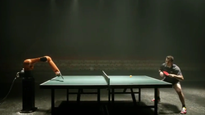
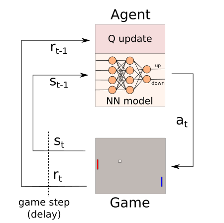
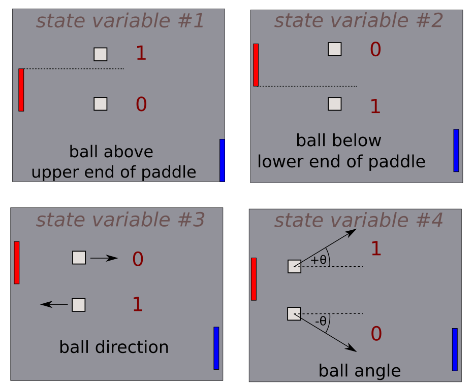
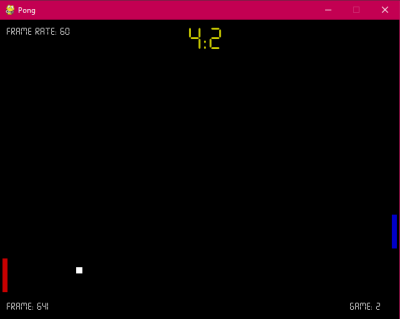

My first foray into reinforcement learning
Supervised and unsupervised learning are the backbone of today’s machine learning solutions, but reinforcement learning is the technique that makes you envisage androids, Terminator, Skynet, and the rise of the machines!
One of the “Hello World!” toy examples in reinforcement learning is to teach an computer ‘agent’ to play pong from scratch, in this case in a Python script.
Reward, or carrot and stick
Reinforcement learning uses principles similar to those that we might use when we humans learn. For example, to become better at chess, we can study text books, openings, end game play. This of course helps, but I would wager most players learn more from simply playing many hundreds of games against other human or computer players, and learning from what went well, and what didn’t in those games.
Reinforcement learning, as the name suggests, uses a reward scheme to encourage a learner (or ‘agent’ in the lingo) to do the right thing, and optionally, punishments, which are simply rewards with a negative value. Exactly the same when training a puppy with treats when they pee outside, and stern words when they pee on the carpet!
The classic learning loop

Formally, based on a reward signal (\(r_{t-1}\)), and a numerical description of the state of the environment (\(s_{t-1}\)) from a time just gone, the agent can perform an action in the next time step (\(a_t\)) which influences the state of this world it inhabits. An all-seeing observer inform the agent of the new state and any rewards earned, and so the loop continues.
Informally, in our “teach a computer to play Pong” context, the agent is simply the part of our Python program that can control one of the two Pong paddles. The actions this agent can take are to move the paddle up or down or not to move it. The environment is simply the Pong game area: the ball, and the paddles, and the boundary. I chose the state of this environment to be just the location and movement of the ball relative to the paddles, as shown in the image below.

As shown above, I chose three binary states and one numeric state to represent the Pong ‘environment’:
- the ball is higher than, or above the top end of the agent’s paddle
- the ball is lower than, or below the bottom end of the agent’s paddle
- the balls directions, towards or away from the agent’s paddle
- the angle of the ball relative to the horizontal.
The “all-seeing observer” is just the part of the Python code that determines this state, checks for rewards like scoring a goal or just hitting the ball with the paddle, and informs the agent part of the script about this new state, and any rewards just earned.
The agent then trains a neural network based on the state and the actions taken as the game progresses, and the reward is use to guide this learning process, so the in future, the agent is likely to take those actions again that helped earn a reward previously.
Exploitation versus exploration
To counteract this “positive feedback” loop from causing the agent to fixate only on a limited set of actions that it has learned can maximize reward (i.e. the agent ‘exploiting’ learned behaviors for maximum reward, we need to occasionally force the agent to ‘explore’ by trying some random actions every now and then. This is done for a couple of reasons:
- The agent might have learned a good way to get rewarded, but there may be better ways…
- The only way to keep exploring for this better way is to try new actions!
Python Pong
The first thing I needed was to write a Pong game that I could play against a conventional “hard-coded” or old-skool computer player. To make the game more playable and interesting, and I added in various adjustable settings, including:
- ball speed increments each time a goal is scored
- paddles that shrink a little after each goal
- size of the paying area
- “spin” of the ball, changing the bounce angle depending on paddle movement
Without some of these adjustments, I found that the ball trajectory could become “stuck”, with neither player needing to move their paddle to maintain a rally.
Once I had set up the game to give a human player a reasonable challenge, I added in the reward values, as these are most readily determined in the Pong game code itself.
Below is an example screen grab of the game. The agent is always the left-hand player with the red paddle. The right-hand player is the “traditional” computer opponent, controlled simply by tracking the ‘y’ or vertical part of the ball’s positions, plus a bit of “jiggle” to make it slightly less than infallible…

Training and Playing
The agent is to be initially made to train itself from a baseline of zero prior experience. It continues to experience many games until a certain performance threshold is reached. This threshold was found by trial and error, because if you leave the agent to train and train and train, it eventually starts to behave oddly, for example, by spending much of the game with the paddle stuck at the top or bottom of the screen!
This may be due to over-fitting of the neural network on the training data. In other words, the agent has gone beyond a reasonable level of learning for good, general play, and no longer plays in a balanced manner, with some actions being taken that aren’t generally useful.
You can then restart the Pong game, this time in “Play” mode, in which the agent no longer learns, but uses what is already learned to play. The short video below is an example of the agent playing in this way.
References
Feel free to check out the code, and that of Youtuber ‘Python Engineer’ from which this Pong game was inspired:
My code on github for reinforcement learning Pong: https://github.com/threefeetdeep/ReinforcementPong
Python Engineer’s YouTube series on reinforcement learning Snake game: https://www.youtube.com/watch?v=PJl4iabBEz0&list=RDCMUCbXgNpp0jedKWcQiULLbDTA&index=2
Python Engineer’s code: https://github.com/python-engineer/snake-ai-pytorch